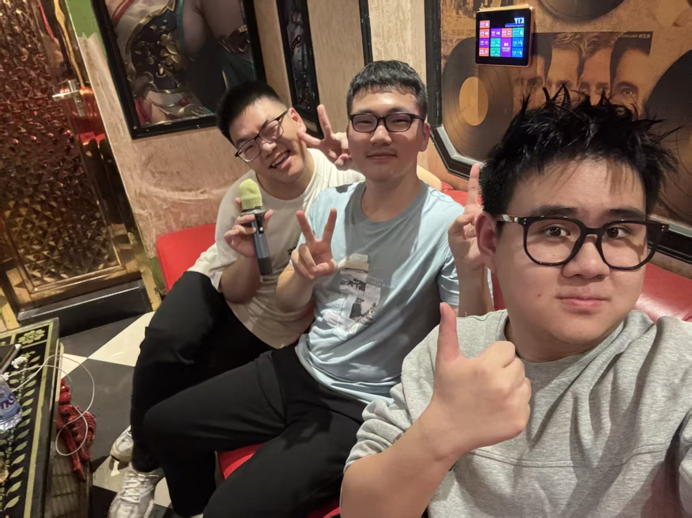
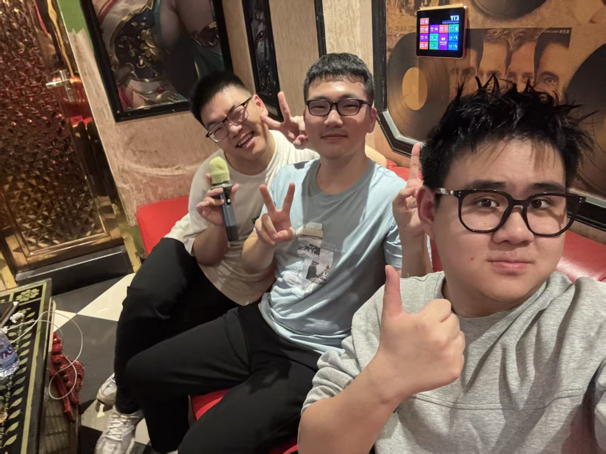

My Values and Beliefs
I believe that honesty and responsibility are the most important values in both study
and life. As a computer science student, I think it is important to write clean and
reliable code and to be responsible for the work I produce.
I also value continuous learning. Technology changes very fast, so I believe that
maintaining curiosity and a willingness to learn new things is essential.
In addition, I respect teamwork and communication, even though I am an introverted person.
 
